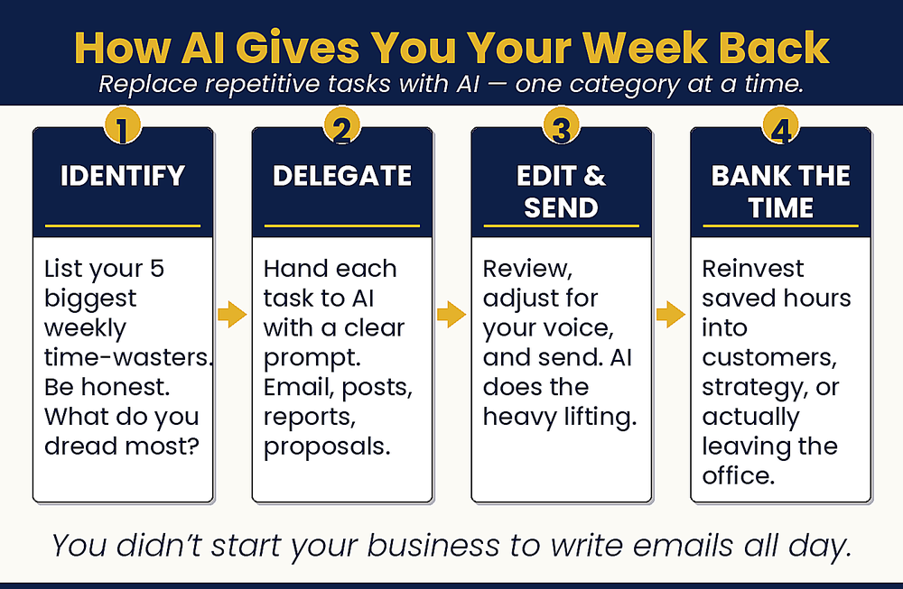

Chapter 6: Save 10 Hours a Week
Let AI Do the Boring Stuff
How can I save time when I’m so busy?

Chapter Recap
Time is the one thing you cannot make more of. This chapter helps you win some back. Start with a quick time audit. Find the tasks that eat your week but do not need you. Those are the jobs AI can take off your plate. Email, scheduling, reports, and busywork are good places to start. Hand them off, and you can save around ten hours a week. That is time for the work only you can do.
In This Chapter
- Your 10-Minute Time Audit
- Reality Check
- Where Does Your Time Actually Go?
- Your Five Biggest Time Drains (and How to Fix Them)
- Recover 10 Hours a Week: Where Do They Come From?
- AI Scheduling Tools: Stop Playing Calendar Tetris
- But I’m Too Busy to Save Time
- You Saved 10 Hours. Now What?
- Big Dividends from a Small Investment
Grab-and-Go Prompts
1. Summarize Weekly Performance: paste your data first, then ask
Summarize last week’s performance in plain English. Flag anything unusual or worth my attention.
2. Replicate Your Workflow: match how you already do a task
Here is how I currently write a follow-up email: [describe your steps]. Replicate this process but faster.
Download
- 📄 AI Handoff Planner: maps your biggest time drains to specific AI tools and prompts.
Your Move
Do the time audit right now. Make your list from yesterday. Label each item with a dollar sign, a star, or a clock. Add up the clock items. That is your AJJ opportunity. Then pick the single biggest clock item and identify which tool or approach from this chapter addresses it. Try it tomorrow before you do the task the old way.

Read the full chapter in
AI Jiu-Jitsu: Run Circles Around the Big Guys, the book this toolbox comes from.
Prefer to have it set up for you? BreakThru Growth offers AI coaching and done-for-you setup for small businesses → BreakThruGrowth.com